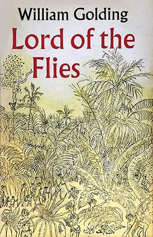

 Publicado originalmente em 1954, Senhor das Moscas é um dos romances essenciais da literatura mundial. Adaptado duas vezes para o cinema e traduzido para 35 idiomas, o clássico de William Golding já foi visto como uma alegoria, uma parábola, um tratado político e mesmo uma visão do apocalipse. Durante a Segunda Guerra Mundial, um avião cai numa ilha deserta, e seus únicos sobreviventes são um grupo de meninos. Liderados por Ralph, eles procuram se organizar enquanto esperam um possível resgate. Mas aos poucos esses garotos aparentemente inocentes transformam a ilha numa visceral disputa pelo poder, e sua selvageria rasga a fina superfície da civilidade. Ao narrar a história de meninos perdidos numa ilha, aos poucos se deixando levar pela barbárie, Golding constrói uma reflexão sobre a natureza do mal e a tênue linha entre o poder e a violência desmedida. A nova tradução para o português mostra como Senhor das Moscas mantém o mesmo impacto desde seu lançamento: um clássico moderno; um livro que retrata de maneira inigualável as áreas de sombra e escuridão da essência do ser humano.
Eu não conhecia o escritor William Golding. Pronto, falei. Não conhecia sua enorme importância na literatura inglesa, não conhecia sua história. Enfim, não conhecia nada sobre ele, muito menos sabia que ele ganhara o Prêmio Nobel. Fiquei sabendo apenas quando li a orelha do livro. Até que um livreiro amigo que trabalha comigo, chegou para mim e disse: - Conhece William Golding? - Não!(respondi). Então chegou a hora de você conhecer um dos maiores escritores da língua inglesa. Ele me fez uma breve resenha do livro e me entusiasmei. Peguei o livro e não conseguia mais largar. Quando terminei fiquei assombrado com a história do livro e logo depois a sua história pessoal.
Sua história de vida, sem sombra de dúvidas, foi fundamental na escrita desse livro. William Golding nasceu no dia 19 de setembro em 1911, na cidade de Cornwall, Inglaterra. Formou-se em ciências naturais por influência dos pais, pela Universidade de Oxford. Mas logo em seguida seu foco passou a ser outro, a literatura. Trabalhou brevemente como ator e diretor de teatro, escreveu poesia, e, pouco depois, tornou-se professor. Quando a Segunda Guerra estourou em 1940, ingressou na Marinha Real, onde atuou no comando de lançadores de foguetes e participou da invasão na Normandia.
William Golding escreveu “Senhor das Moscas” após a Segunda Guerra, durante a qual os nazistas exterminaram seis milhões de judeus, a URSS, logo após a sua revolução, transformara-se em uma ditadura sanguinária e os Estados Unidos lançaram duas bombas atômicas sobre o Japão. Se levarmos em consideração esse contexto de profundo pessimismo, poderemos entender esse livro.
“Senhor das Moscas” explora o lado escuro da humanidade, a selvageria que sustenta até os seres humanos mais civilizados. O livro é uma paródia trágica de contos de aventura para crianças, ilustrando a natureza do mal da humanidade. Ele apresenta ao leitor uma cronologia dos acontecimentos que levaram um grupo de meninos cheios de esperança ao desastre. A forma de sobreviverem, seu ambiente nada civilizado, sem supervisão de ninguém dá a tônica ao livro.
O livro não tem floreios filosóficos e poéticos, nem longas descrições. É uma alegoria, o que significa que os personagens e objetos no romance são transmitidos por meio das ideias centrais do livro.
Ao retratar as várias maneiras, o modus vivendi dos meninos nessa ilha, nesse novo ambiente e interagirem com essa nova liberdade, Golding explora os fantasmas, as aparições ilusórias, ou seja, o vasto espectro pelo qual os seres humanos respondem ao estresse, as mudanças e tensões.
Vamos à história do livro, mas com aquele compromisso de não entregar tudo para o leitor desse espaço.
No meio de uma guerra nuclear, um grupo de meninos sobrevive a uma queda de avião em uma ilha totalmente desabitada. O avião caiu e foi arrastado para o mar, deixando os meninos encalhados em uma ilha desconhecida. Por causa da devastação da bomba atômica, é provável que ninguém saiba do paradeiro dessas crianças.
“Senhor das Moscas” abre com Ralph e Piggy (dois sobreviventes) conversando e desse diálogo o livro fornece o pano de fundo da situação em que estão vivendo.
Ralph sente um enorme prazer em estar na ilha longe dos adultos, mas Piggy (Porquinho) não está tão feliz assim. Odiava o apelido que seu amigo lhe dera. Na praia, Ralph investiga uma grande plataforma de granito com vista para uma piscina longa que se formou. Demonstra as suas habilidades de nadador, quando subitamente vê uma concha identificada por Porquinho como um elemento precioso que pode ser soprado como um trompete. Porquinho convence Ralph a soprar, usando-o para convocar os sobreviventes na praia.
Logo após o sopro, os meninos entre as idades de 6 e 12 anos aparecem de dentro da selva para a praia. O último a chegar é Jack. Todos estão alegres pelo reencontro. No entanto, fiéis à política democrática, Ralph é eleito líder por razões superficiais. Ele é um menino bonito e simpático, que parece estar no comando por causa de seu uso da concha, que funciona como um papel aglutinador. Muito embora a ideia tenha sido de Porquinho por ter um raciocínio rápido (o intelectual do grupo), mas e não era carismático. Apesar de ter descoberto a concha, não podia soprar devido a sua asma, o que permitiu a Ralph a convocação.
Jack tem alguma experiência em exercer o controle sobre os outros meninos. E isso se transforma em um desafio à liderança de Ralph. Os talentos de Ralph, acrobacia e natação, não servem a nenhum propósito prático na selva. Jack nesse ponto era mais arrojado, agrupa ao redor de si um grupo de caçadores para conhecer a ilha. A natureza bélica de Jack se faz presente em todo momento. Reúne o seu pequeno “exército” de caçadores simbolizando a violência e o mal e, lentamente, por ser mais prático, vai roubando e minando a liderança de Ralph.
Enquanto o romance de Golding não prova a existência de fantasmas, ele fornece um comentário complexo sobre os medos subjacentes e verdadeiros demônios encontrados na humanidade.
Na medida em que o romance avança, Golding mostra como diferentes pessoas sentem a influência dos instintos de civilização e selvageria nos mais variados graus. Quando deixados à sua própria sorte, a ideia da maldade humana ganha força, assim como a selvageria, a crueldade e barbárie. Esta ideia aparece no livro através de símbolos como a besta e a cabeça da porca no jogo em que viviam.
“Senhor das Moscas” é um livro que recomendo não só aos adultos, mas ao público juvenil também. Existem várias conclusões para esse livro. Gostaria de ler a interpretação de cada um de vocês aqui no blog.
“Senhor das Moscas”, de William Golding, deve ser leitura obrigatória nas escolas, deve ser leitura obrigatória para todos aqueles que refletem sobre a nossa condição humana. Um livro que merece um lugar de destaque em sua estante.